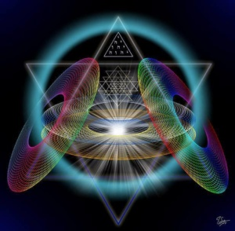

…”, zanimiva je tale tema o vedeževanju ali jasnovidnosti, zato bom skušal tukaj nekaj malega napisati s svojega zornega kota, kakšen naj bi bil odnos vedeževalca do strank, čeprav se s tem nikoli nisem ukvarjal.
Vedeževanje naj bi bila pot v pozitivno prihodnost, katero je treba poznati.
V tem primeru imamo opravka s tem, da je tisto, o čemer govorimo, res tisto, kar vidimo.
Zato se mora začeti s tem, da v tem pogledu najprej sebe pravilno ocenimo, ali smo sposobni prav videti in govoriti resnico.
Resničnost se ne pusti manipulirati, kdor jo, ta manipulira sam sebe.
Kdor sam svoje sposobnosti ne spozna, ta ne sme prekoračiti meja lastne osebnosti.
Zakaj, kdor pošlje svojo dušo skozi zvezdna vrata, se mora zanesti, da jo bo spet dobil tako nazaj, kot jo je poslal na potovanje, sicer bo samega sebe razosebil.
Vedeževanje je v osnovi vsakemu prirojeno, koliko ga je sploh sposoben razviti v svoji notranjosti, je odvisno od nadarjenosti posameznega človeka.
Torej, vsak človek se more podati na pot vedeževanja, a resnično povabljen na pot je le tisti, ki je sposoben notranjega občutenja, gledanja in koncentracije.
Taki so nekateri odlični svetovalci, zato bom uporabil kar besede enega od mnogih, ki jih pravi sicer nekje drugje:
“Vabilo skozi Zvezdna vrata je pravzaprav vabilo vodila naše notranjosti, za katero uporabljamo slike pravilno izrisanega Srca, ki ob enem predstavlja naše Sočutje do vsega…”
Ob tem naj se zahvalim avtorju za ta komentar ob temi “Vedeževanje”.
Ni bil moj namen s tem Blogom doseči tako visoko številko oglednikov, ker so števila le statistika – vsekakor pa to število v tem primeru govori o prikazu zanimanja ljudi. Ker je to število visoko, me toliko bolj veseli zaradi avtorske namembnosti pisanja, ki je posvečeno predstavitvi odtenkov – različnosti med nami.
Blog vedno teži k originalnemu Stilu, da iztisneš iz sebe kar si. Ne, da bi šlo za dokazovanje svoje namišljene veličine nad našo majhnostjo … bolj pomembna je izključitev možnosti plagiatorstva.
V Bazi je vir in izvir. Tisto kar si in ono, do česar imaš še najbolj pravico svojine. Je delovanje navzven in poplačilo sili spočetja. Aurelija Z. M. Fotografiji: splet.
← Nazaj na članke